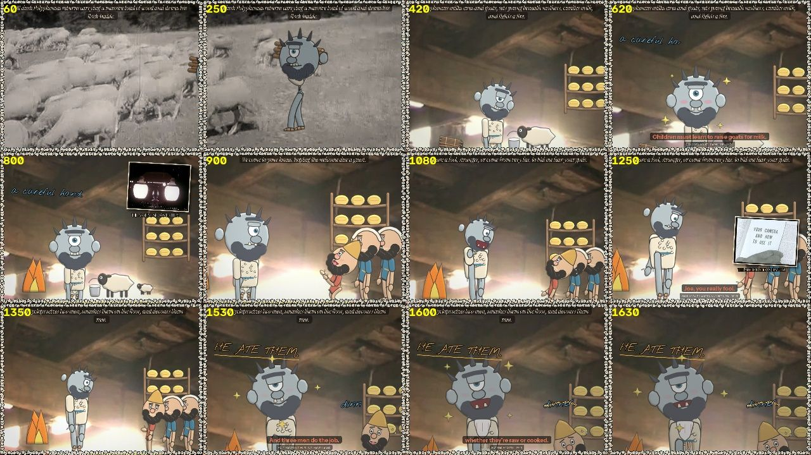
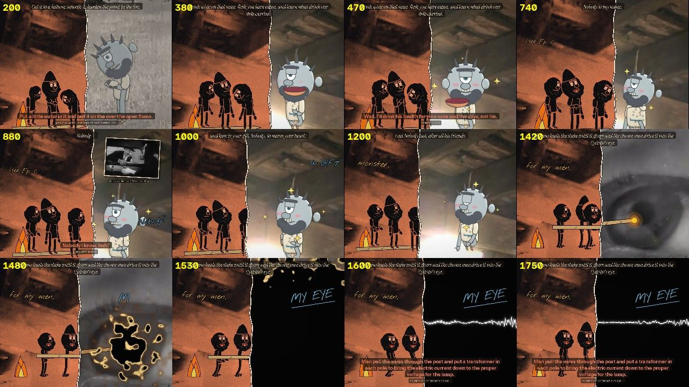
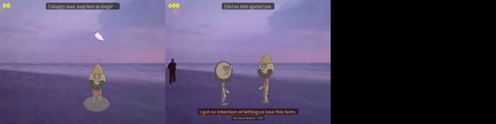
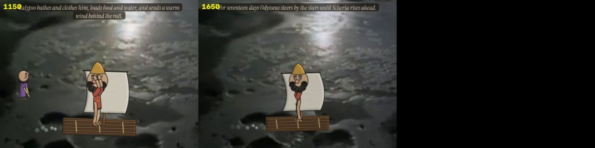

Home / Process / Episode 2 · THE GUEST-GIFT
The Found Odyssey · process
Episode 2 · THE GUEST-GIFT
22 sheets and frames, in the order they were made.












Home / Process / Episode 2 · THE GUEST-GIFT
The Found Odyssey · process
22 sheets and frames, in the order they were made.



